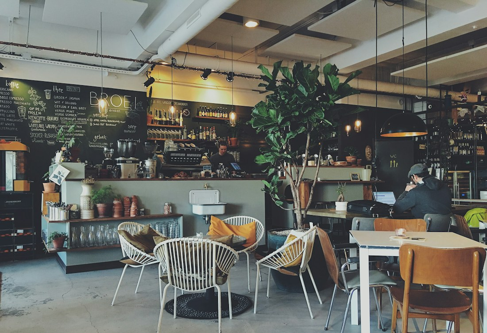

قابهای مکثبعضی لحظهها،
بعضی لحظهها،
دیدنیاند.
نور، بافت، عطر؛ چند قاب از حالوهوایی که دوست داریم.

تصاویر از Unsplash برای نمایش فضای پیشنهادی انتخاب شدهاند؛ تصاویر کافهٔ واقعی جایگزین میشوند.
نور، بافت، عطر؛ چند قاب از حالوهوایی که دوست داریم.

تصاویر از Unsplash برای نمایش فضای پیشنهادی انتخاب شدهاند؛ تصاویر کافهٔ واقعی جایگزین میشوند.